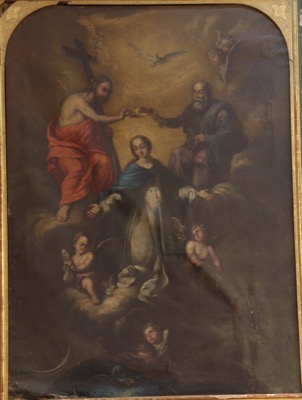
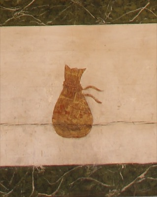
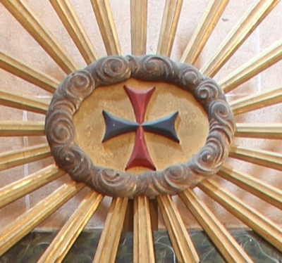
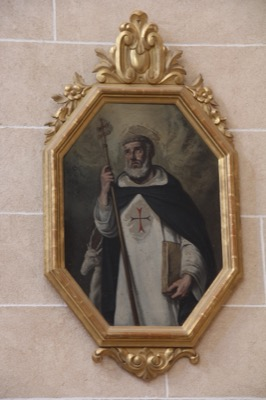
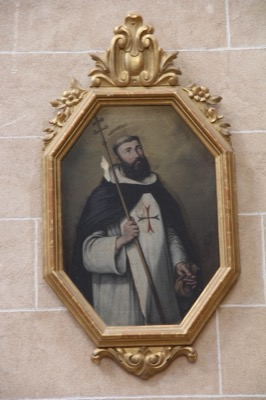

La Santísima Trinidad coronando a la Virgen del Remedio
Toca para ver la ficha

Emblema de la bolsa para el rescate de cautivos
Toca para ver la ficha

Cruz trinitaria
Toca para ver la ficha

San Félix de Valois
Toca para ver la ficha

San Juan de Mata
Toca para ver la ficha